Last updated: 2025-03-31
Checks: 7 0
Knit directory: 2_ontology_bias/analysis/
This reproducible R Markdown analysis was created with workflowr (version 1.7.1). The Checks tab describes the reproducibility checks that were applied when the results were created. The Past versions tab lists the development history.
Great! Since the R Markdown file has been committed to the Git repository, you know the exact version of the code that produced these results.
Great job! The global environment was empty. Objects defined in the global environment can affect the analysis in your R Markdown file in unknown ways. For reproduciblity it’s best to always run the code in an empty environment.
The command set.seed(20240905) was run prior to running
the code in the R Markdown file. Setting a seed ensures that any results
that rely on randomness, e.g. subsampling or permutations, are
reproducible.
Great job! Recording the operating system, R version, and package versions is critical for reproducibility.
Nice! There were no cached chunks for this analysis, so you can be confident that you successfully produced the results during this run.
Great job! Using relative paths to the files within your workflowr project makes it easier to run your code on other machines.
Great! You are using Git for version control. Tracking code development and connecting the code version to the results is critical for reproducibility.
The results in this page were generated with repository version 4a2865c. See the Past versions tab to see a history of the changes made to the R Markdown and HTML files.
Note that you need to be careful to ensure that all relevant files for
the analysis have been committed to Git prior to generating the results
(you can use wflow_publish or
wflow_git_commit). workflowr only checks the R Markdown
file, but you know if there are other scripts or data files that it
depends on. Below is the status of the Git repository when the results
were generated:
Ignored files:
Ignored: .DS_Store
Ignored: .Rhistory
Ignored: .Rproj.user/
Ignored: analysis/.DS_Store
Ignored: analysis/figure/
Ignored: analysis/myEnvironment.RData
Ignored: data/cell_line_wgbs/
Ignored: data/gene_sets/
Ignored: data/long_read/
Ignored: data/microarray/
Ignored: data/wgbs/
Ignored: output/figures/
Ignored: renv/library/
Ignored: renv/staging/
Untracked files:
Untracked: analysis/clusterlog.txt
Untracked: analysis/input/
Untracked: analysis/mc_h1/
Untracked: code/ChatGPT_translate.html
Untracked: code/ChatGPT_translate_files/
Unstaged changes:
Modified: .gitignore
Modified: 2_ontology_bias.Rproj
Modified: _workflowr.yml
Modified: analysis/index.Rmd
Modified: code/runSeqDmMethods.R
Modified: renv/.gitignore
Modified: renv/activate.R
Modified: renv/settings.json
Note that any generated files, e.g. HTML, png, CSS, etc., are not included in this status report because it is ok for generated content to have uncommitted changes.
These are the previous versions of the repository in which changes were
made to the R Markdown (analysis/00_exploreCpGDistrib.Rmd)
and HTML (docs/00_exploreCpGDistrib.html) files. If you’ve
configured a remote Git repository (see ?wflow_git_remote),
click on the hyperlinks in the table below to view the files as they
were in that past version.
| File | Version | Author | Date | Message |
|---|---|---|---|---|
| Rmd | 4a2865c | Caitlin Page | 2025-03-31 | wflow_publish("00_exploreCpGDistrib.Rmd") |
| Rmd | ee01c17 | Caitlin Page | 2025-03-31 | update |
| Rmd | ef31452 | Caitlin Page | 2025-03-13 | initial commit |
| Rmd | 2c6a8ac | Caitlin Page | 2025-02-21 | commit |
| Rmd | 5e64507 | Caitlin Page | 2024-11-22 | renv stuff |
| Rmd | a971e5d | Caitlin Page | 2024-09-06 | init commit |
library(plyranges)Loading required package: BiocGenerics
Attaching package: 'BiocGenerics'The following objects are masked from 'package:stats':
IQR, mad, sd, var, xtabsThe following objects are masked from 'package:base':
anyDuplicated, aperm, append, as.data.frame, basename, cbind,
colnames, dirname, do.call, duplicated, eval, evalq, Filter, Find,
get, grep, grepl, intersect, is.unsorted, lapply, Map, mapply,
match, mget, order, paste, pmax, pmax.int, pmin, pmin.int,
Position, rank, rbind, Reduce, rownames, sapply, setdiff, table,
tapply, union, unique, unsplit, which.max, which.minLoading required package: IRangesLoading required package: S4VectorsLoading required package: stats4
Attaching package: 'S4Vectors'The following object is masked from 'package:utils':
findMatchesThe following objects are masked from 'package:base':
expand.grid, I, unnameLoading required package: GenomicRangesLoading required package: GenomeInfoDb
Attaching package: 'plyranges'The following object is masked from 'package:IRanges':
sliceThe following object is masked from 'package:stats':
filterlibrary(dplyr)
Attaching package: 'dplyr'The following objects are masked from 'package:plyranges':
between, n, n_distinctThe following objects are masked from 'package:GenomicRanges':
intersect, setdiff, unionThe following object is masked from 'package:GenomeInfoDb':
intersectThe following objects are masked from 'package:IRanges':
collapse, desc, intersect, setdiff, slice, unionThe following objects are masked from 'package:S4Vectors':
first, intersect, rename, setdiff, setequal, unionThe following objects are masked from 'package:BiocGenerics':
combine, intersect, setdiff, unionThe following objects are masked from 'package:stats':
filter, lagThe following objects are masked from 'package:base':
intersect, setdiff, setequal, unionlibrary(ggplot2)
library(ggVennDiagram)
library(IlluminaHumanMethylationEPICanno.ilm10b4.hg19)Loading required package: minfiLoading required package: SummarizedExperimentLoading required package: MatrixGenericsLoading required package: matrixStats
Attaching package: 'matrixStats'The following object is masked from 'package:dplyr':
count
Attaching package: 'MatrixGenerics'The following objects are masked from 'package:matrixStats':
colAlls, colAnyNAs, colAnys, colAvgsPerRowSet, colCollapse,
colCounts, colCummaxs, colCummins, colCumprods, colCumsums,
colDiffs, colIQRDiffs, colIQRs, colLogSumExps, colMadDiffs,
colMads, colMaxs, colMeans2, colMedians, colMins, colOrderStats,
colProds, colQuantiles, colRanges, colRanks, colSdDiffs, colSds,
colSums2, colTabulates, colVarDiffs, colVars, colWeightedMads,
colWeightedMeans, colWeightedMedians, colWeightedSds,
colWeightedVars, rowAlls, rowAnyNAs, rowAnys, rowAvgsPerColSet,
rowCollapse, rowCounts, rowCummaxs, rowCummins, rowCumprods,
rowCumsums, rowDiffs, rowIQRDiffs, rowIQRs, rowLogSumExps,
rowMadDiffs, rowMads, rowMaxs, rowMeans2, rowMedians, rowMins,
rowOrderStats, rowProds, rowQuantiles, rowRanges, rowRanks,
rowSdDiffs, rowSds, rowSums2, rowTabulates, rowVarDiffs, rowVars,
rowWeightedMads, rowWeightedMeans, rowWeightedMedians,
rowWeightedSds, rowWeightedVarsLoading required package: BiobaseWelcome to Bioconductor
Vignettes contain introductory material; view with
'browseVignettes()'. To cite Bioconductor, see
'citation("Biobase")', and for packages 'citation("pkgname")'.
Attaching package: 'Biobase'The following object is masked from 'package:MatrixGenerics':
rowMediansThe following objects are masked from 'package:matrixStats':
anyMissing, rowMediansLoading required package: BiostringsLoading required package: XVector
Attaching package: 'Biostrings'The following object is masked from 'package:base':
strsplitLoading required package: bumphunterLoading required package: foreachLoading required package: iteratorsLoading required package: parallelLoading required package: locfitlocfit 1.5-9.11 2025-01-27Setting options('download.file.method.GEOquery'='auto')Setting options('GEOquery.inmemory.gpl'=FALSE)library(IlluminaHumanMethylationEPICmanifest)
library(annotatr)wgbs_counts <- readRDS("../output/wgbs_counts.rds")
anno_array <- getAnnotation(IlluminaHumanMethylationEPICanno.ilm10b4.hg19)
anno_array <- anno_array %>% data.frame() %>%
mutate(seqnames = chr, start = pos, width = 1, position = paste0(seqnames, "-", start)) %>%
relocate(c(seqnames, start, width))c(seq_sites = nrow(wgbs_counts), array_sites = nrow(anno_array)) seq_sites array_sites
28217448 865859 wgbs_counts %>%
ggplot(aes(x = seqnames, fill = seqnames)) +
geom_bar() +
theme(legend.position = "none")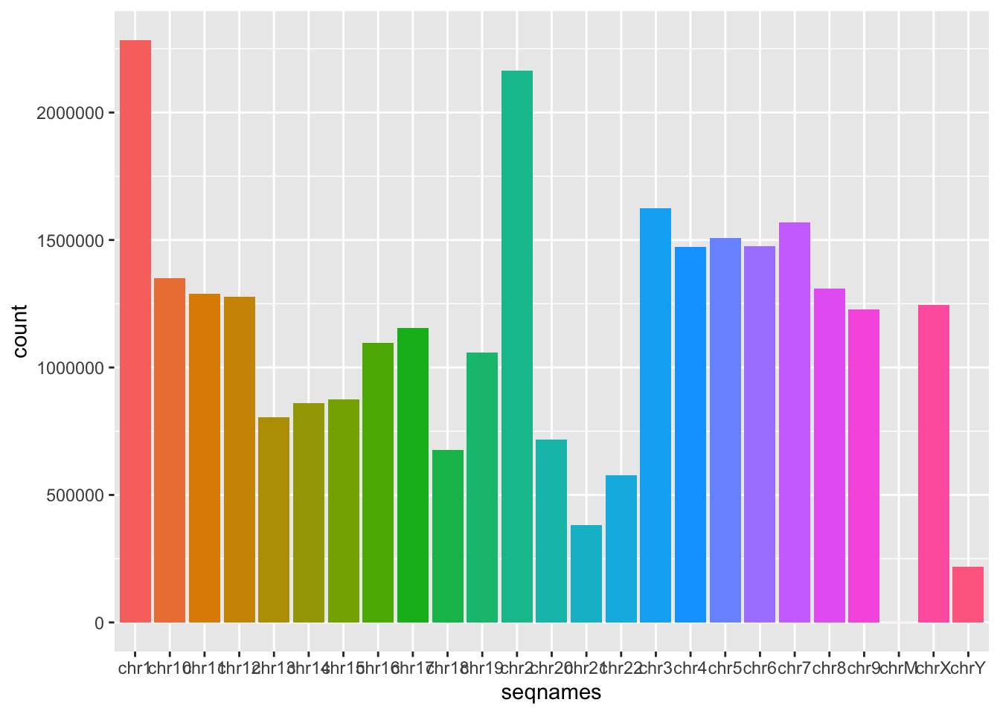
anno_array %>%
ggplot(aes(x = seqnames, fill = seqnames)) +
geom_bar() +
theme(legend.position = "none")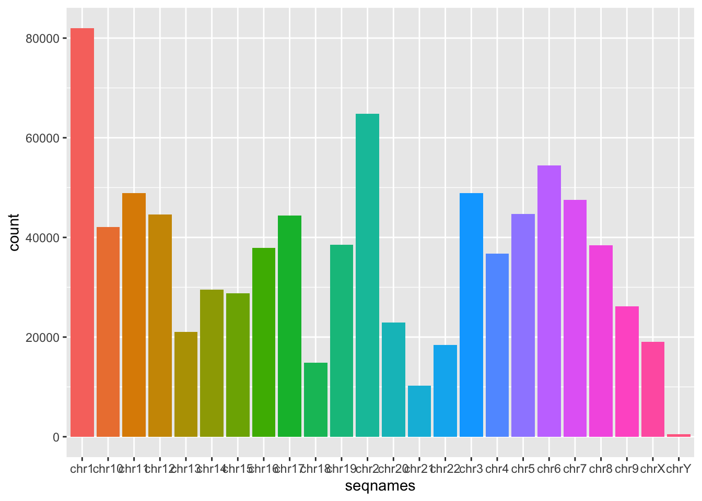
overlap <- find_overlaps(as_granges(wgbs_counts), as_granges(anno_array)) %>% data.frame()
nrow(overlap)[1] 862927list_venn <- list(seq = wgbs_counts$pos,
array = anno_array$position)
ggVennDiagram(list_venn)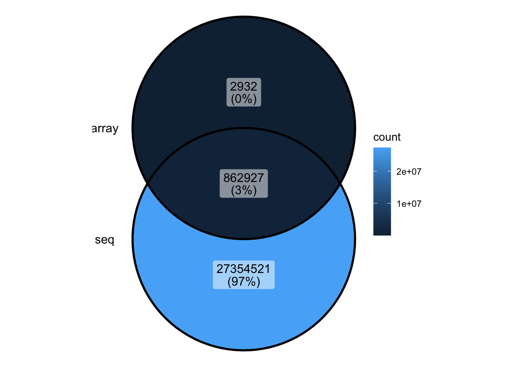 * is this less that overlap than used to?
H: CpGs on sequencing will be closer together
anno_array <- anno_array %>% .[order(.$seqnames, .$start),] %>%
group_by(seqnames) %>% mutate(dist_to_next = lead(start) - start) %>% ungroup()
wgbs_counts <- wgbs_counts %>%
group_by(seqnames) %>% mutate(dist_to_next = lead(start) - start) %>% ungroup()anno_array %>%
ggplot(aes(x = log2(dist_to_next))) +
geom_density()Warning: Removed 24 rows containing non-finite outside the scale range
(`stat_density()`).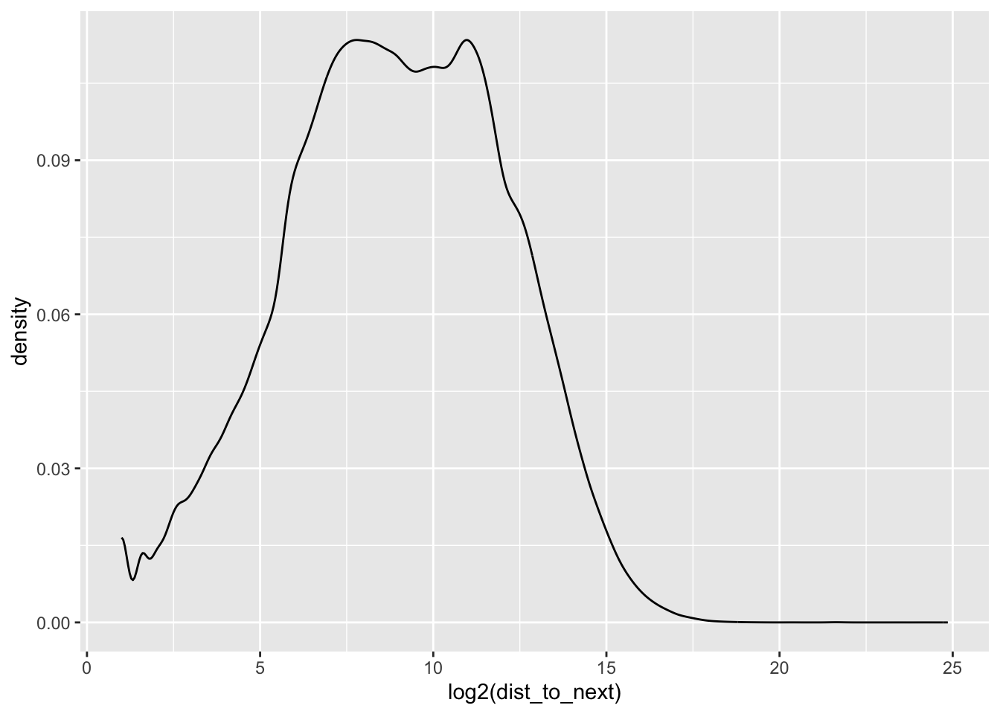
anno_array %>%
ggplot(aes(x = log2(dist_to_next), colour = seqnames)) +
geom_density()Warning: Removed 24 rows containing non-finite outside the scale range
(`stat_density()`).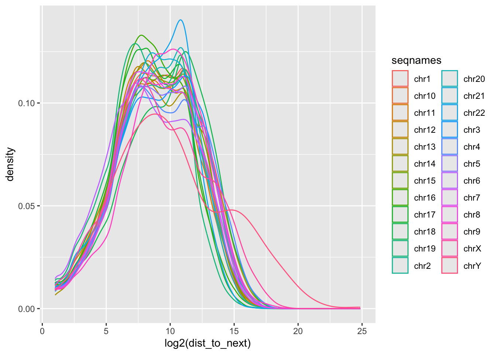
anno_array %>%
ggplot(aes(x = seqnames, y = log2(dist_to_next), fill = seqnames)) +
geom_boxplot() +
theme(legend.position = "none")Warning: Removed 24 rows containing non-finite outside the scale range
(`stat_boxplot()`).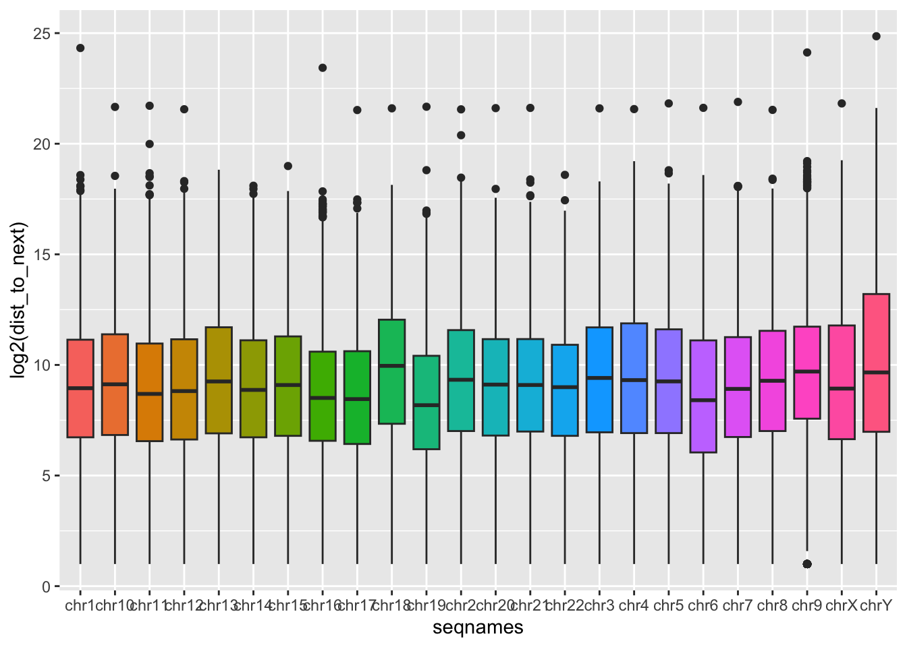
wgbs_counts %>%
ggplot(aes(x = log2(dist_to_next))) +
geom_density()Warning: Removed 25 rows containing non-finite outside the scale range
(`stat_density()`).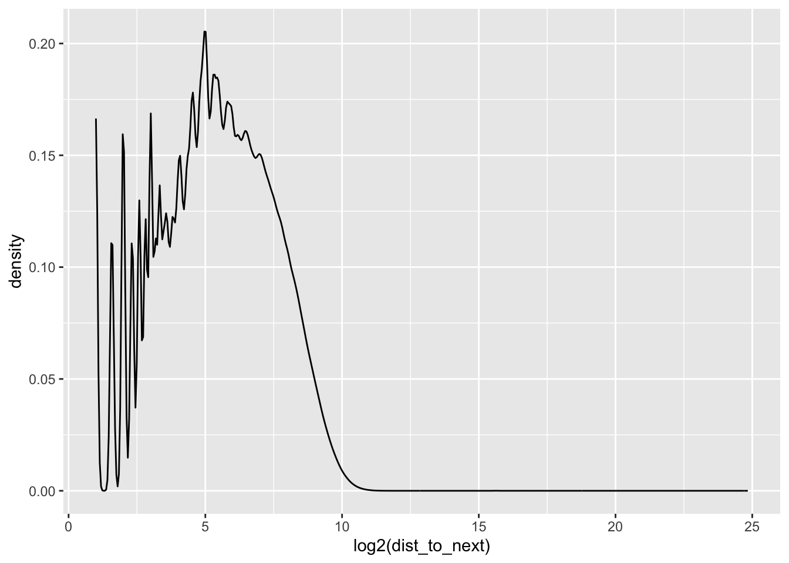
wgbs_counts %>%
ggplot(aes(x = log2(dist_to_next), colour = seqnames)) +
geom_density()Warning: Removed 25 rows containing non-finite outside the scale range
(`stat_density()`).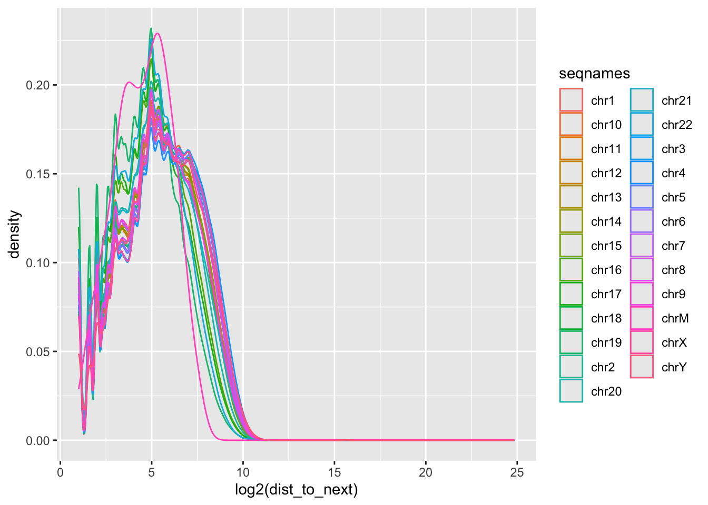
wgbs_counts %>%
ggplot(aes(x = seqnames, y = log2(dist_to_next), fill = seqnames)) +
geom_boxplot() +
theme(legend.position = "none")Warning: Removed 25 rows containing non-finite outside the scale range
(`stat_boxplot()`).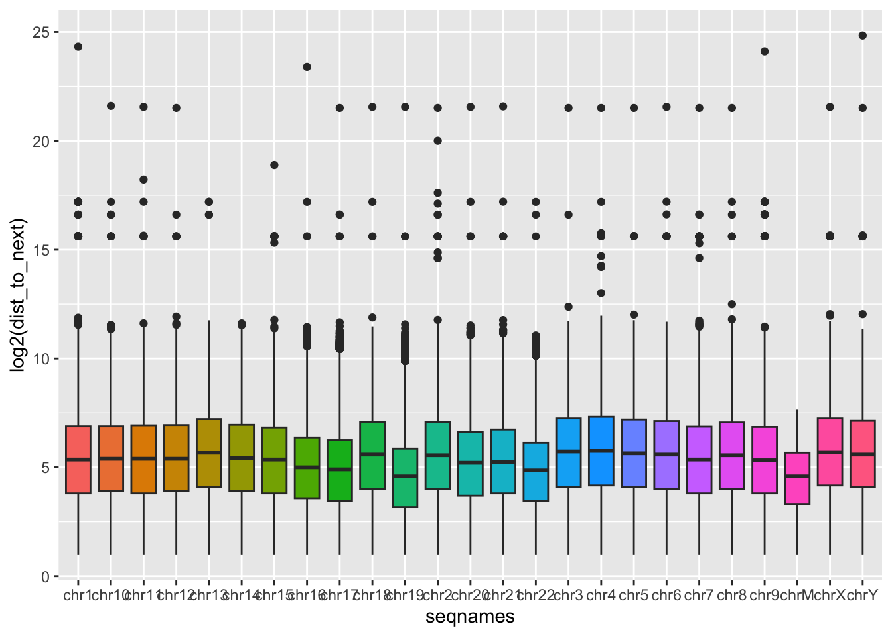
H: CpGs on array overlapping sequencing will have smaller gaps than CpGs that don’t
anno_array %>% mutate(in_overlap = ifelse(Name %in% overlap$Name, TRUE, FALSE)) %>%
ggplot(aes(x = log2(dist_to_next), colour = in_overlap)) +
geom_density() Warning: Removed 24 rows containing non-finite outside the scale range
(`stat_density()`).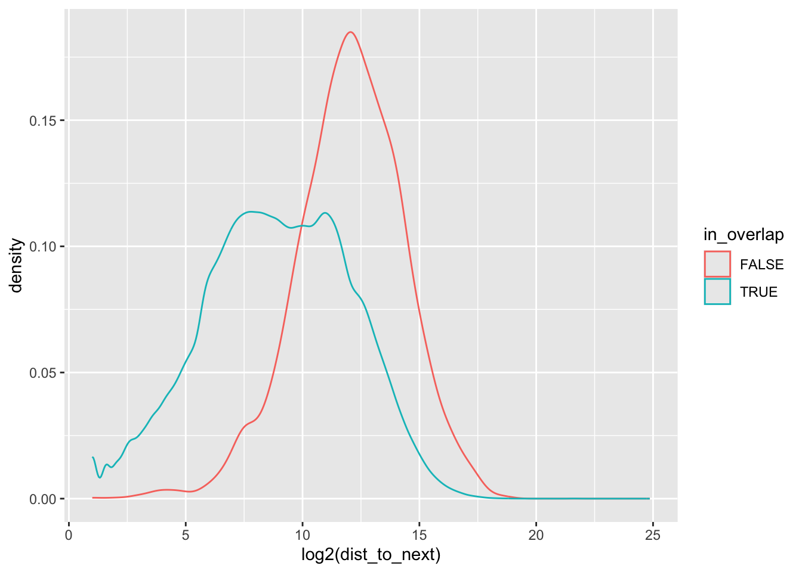
wgbs_counts %>% mutate(in_overlap = ifelse(pos %in% overlap$pos.x, TRUE, FALSE)) %>%
ggplot(aes(x = log2(dist_to_next), colour = in_overlap)) +
geom_density()Warning: Removed 25 rows containing non-finite outside the scale range
(`stat_density()`).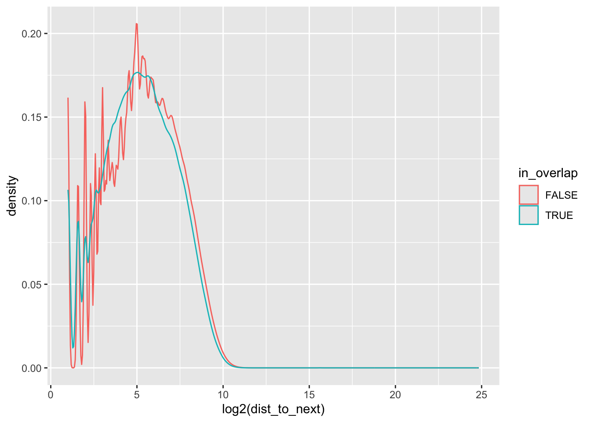
anno_cpg <- build_annotations(genome="hg19", annotations = "hg19_cpgs")Building CpG islands...loading from cacheBuilding CpG shores...Building CpG shelves...Building inter-CpG-islands...anno_cpg <- anno_cpg %>% data.frame()
overlap_feature <- find_overlaps(as_granges(wgbs_counts), as_granges(anno_cpg)) %>% data.frame() rbind(anno_array %>% group_by(Relation_to_Island) %>%
summarise(n=n()) %>% ungroup() %>% mutate(ratio = n/sum(n), data = "All"),
overlap %>% group_by(Relation_to_Island) %>%
summarise(n=n()) %>% ungroup() %>% mutate(ratio = n/sum(n), data = "Overlap"),
anno_array %>% filter(!Name %in% overlap$Name) %>% group_by(Relation_to_Island) %>%
summarise(n=n()) %>% ungroup() %>% mutate(ratio = n/sum(n), data = "Array only")) %>%
ggplot(aes(x = data, y = ratio, fill = Relation_to_Island)) +
geom_bar(stat = "identity")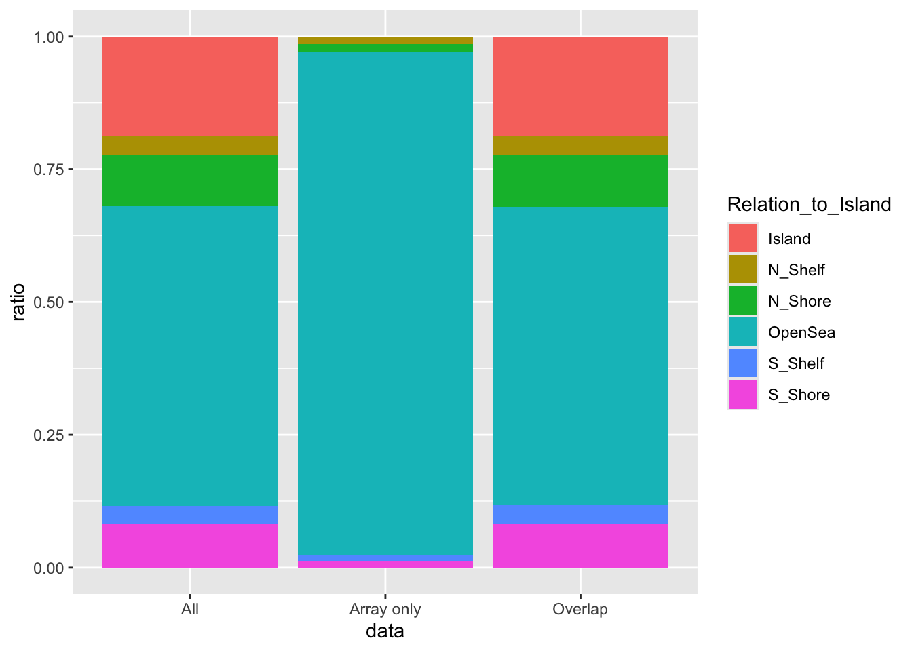
rbind(anno_array %>% group_by(Relation_to_Island) %>%
summarise(n=n()) %>% ungroup() %>% mutate(ratio = n/sum(n), data = "All"),
overlap %>% group_by(Relation_to_Island) %>%
summarise(n=n()) %>% ungroup() %>% mutate(ratio = n/sum(n), data = "Overlap"),
anno_array %>% filter(!Name %in% overlap$Name) %>% group_by(Relation_to_Island) %>%
summarise(n=n()) %>% ungroup() %>% mutate(ratio = n/sum(n), data = "Array only")) %>%
ggplot(aes(x = data, y = n, fill = Relation_to_Island)) +
geom_bar(stat = "identity")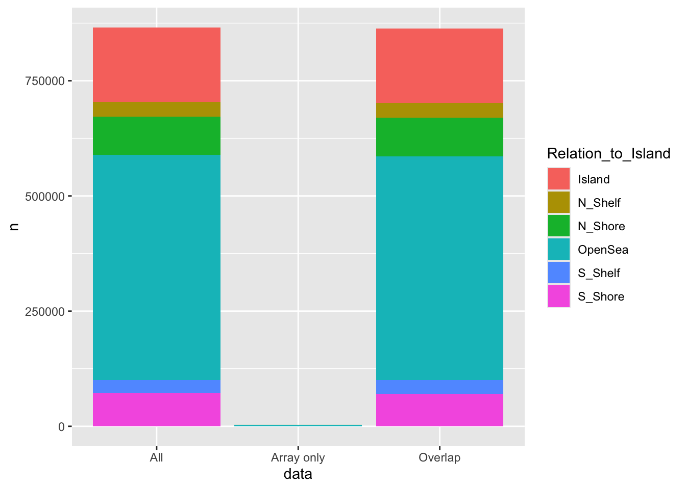
rbind(anno_array %>% group_by(Relation_to_Island) %>%
summarise(n=n()) %>% ungroup() %>% mutate(ratio = n/sum(n), data = "All"),
overlap %>% group_by(Relation_to_Island) %>%
summarise(n=n()) %>% ungroup() %>% mutate(ratio = n/sum(n), data = "Overlap"),
anno_array %>% filter(!Name %in% overlap$Name) %>% group_by(Relation_to_Island) %>%
summarise(n=n()) %>% ungroup() %>% mutate(ratio = n/sum(n), data = "Array only")) %>%
ggplot(aes(x = data, y = ratio, fill = Relation_to_Island)) +
geom_bar(stat = "identity", position = "dodge")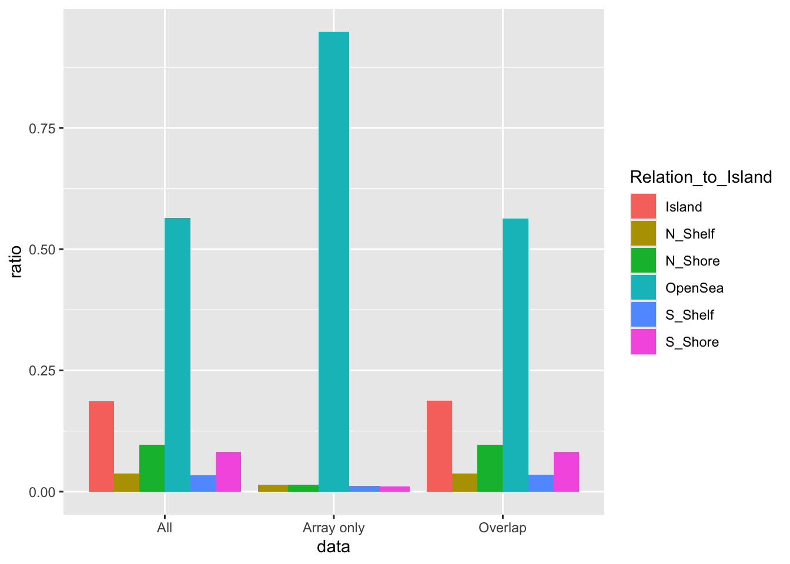
rbind(anno_array %>% group_by(Relation_to_Island) %>%
summarise(n=n()) %>% ungroup() %>% mutate(ratio = n/sum(n), data = "All"),
overlap %>% group_by(Relation_to_Island) %>%
summarise(n=n()) %>% ungroup() %>% mutate(ratio = n/sum(n), data = "Overlap"),
anno_array %>% filter(!Name %in% overlap$Name) %>% group_by(Relation_to_Island) %>%
summarise(n=n()) %>% ungroup() %>% mutate(ratio = n/sum(n), data = "Array only")) %>%
ggplot(aes(x = data, y = n, fill = Relation_to_Island)) +
geom_bar(stat = "identity", position = "dodge")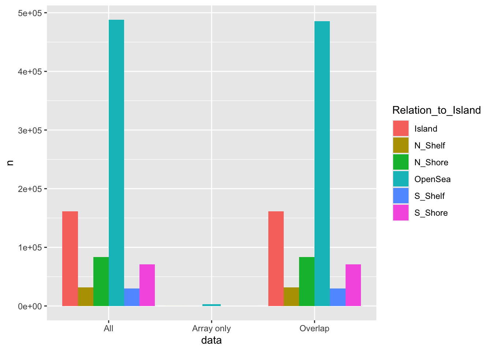 * CpGs only on the array are largely found in the Open Sea (CpG sparse regions) * they are also a very small proportion of the overall data
rbind(overlap_feature %>% group_by(type) %>%
summarise(n=n()) %>% ungroup() %>% mutate(ratio = n/sum(n), data = "All"),
overlap_feature %>% filter(pos %in% overlap$pos.x) %>% group_by(type) %>%
summarise(n=n()) %>% ungroup() %>% mutate(ratio = n/sum(n), data = "Overlap"),
overlap_feature %>% filter(!pos %in% overlap$pos.x) %>% group_by(type) %>%
summarise(n=n()) %>% ungroup() %>% mutate(ratio = n/sum(n), data = "Seq only")) %>%
ggplot(aes(x = data, y = ratio, fill = type)) +
geom_bar(stat = "identity")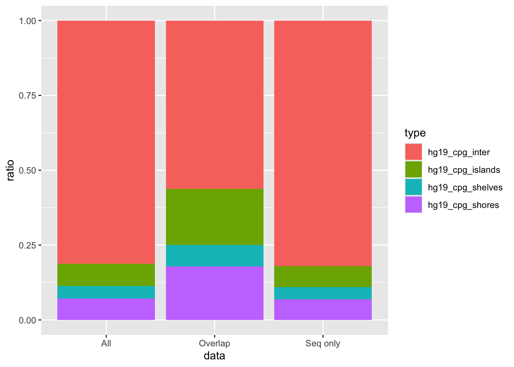
rbind(overlap_feature %>% group_by(type) %>%
summarise(n=n()) %>% ungroup() %>% mutate(ratio = n/sum(n), data = "All"),
overlap_feature %>% filter(pos %in% overlap$pos.x) %>% group_by(type) %>%
summarise(n=n()) %>% ungroup() %>% mutate(ratio = n/sum(n), data = "Overlap"),
overlap_feature %>% filter(!pos %in% overlap$pos.x) %>% group_by(type) %>%
summarise(n=n()) %>% ungroup() %>% mutate(ratio = n/sum(n), data = "Seq only")) %>%
ggplot(aes(x = data, y = ratio, fill = type)) +
geom_bar(stat = "identity", position = "dodge")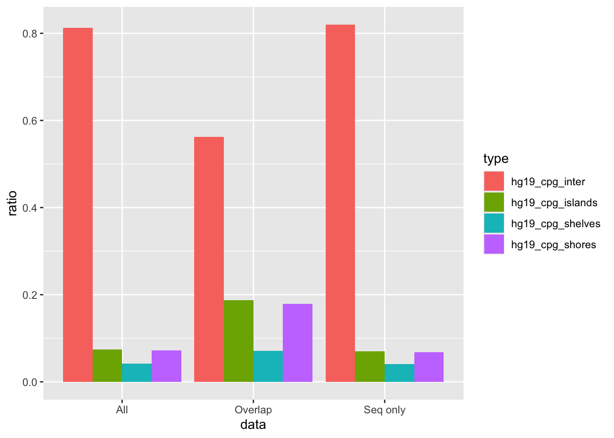
rbind(overlap_feature %>% group_by(type) %>%
summarise(n=n()) %>% ungroup() %>% mutate(ratio = n/sum(n), data = "All"),
overlap_feature %>% filter(pos %in% overlap$pos.x) %>% group_by(type) %>%
summarise(n=n()) %>% ungroup() %>% mutate(ratio = n/sum(n), data = "Overlap"),
overlap_feature %>% filter(!pos %in% overlap$pos.x) %>% group_by(type) %>%
summarise(n=n()) %>% ungroup() %>% mutate(ratio = n/sum(n), data = "Seq only")) %>%
ggplot(aes(x = data, y = n, fill = type)) +
geom_bar(stat = "identity", position = "dodge")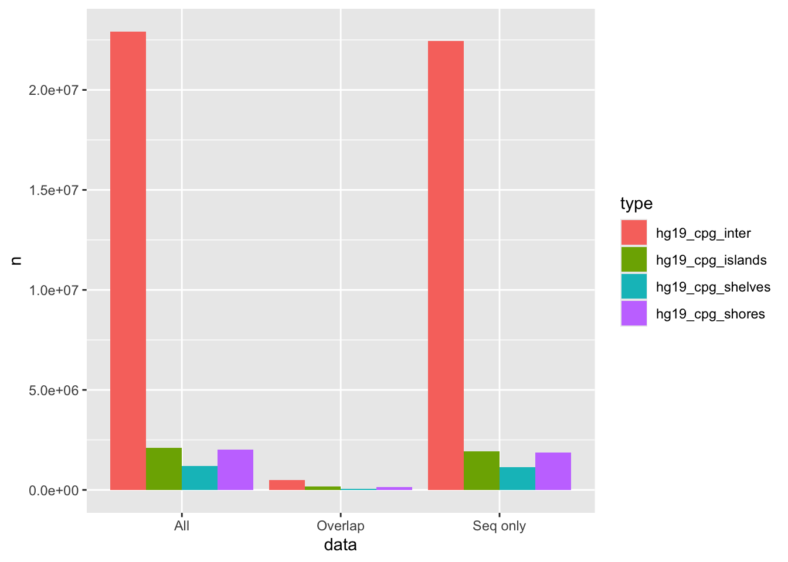 * higher proportion of CpGs in islands in array overlap
overlap %>% group_by(Relation_to_Island) %>%
summarise(n=n()) %>% ungroup() %>% mutate(ratio = n/sum(n))# A tibble: 6 × 3
Relation_to_Island n ratio
<chr> <int> <dbl>
1 Island 161441 0.187
2 N_Shelf 31950 0.0370
3 N_Shore 83322 0.0966
4 OpenSea 485400 0.563
5 S_Shelf 29664 0.0344
6 S_Shore 71150 0.0825anno_array %>% filter(!Name %in% overlap$Name) %>% group_by(Relation_to_Island) %>%
summarise(n=n()) %>% ungroup() %>% mutate(ratio = n/sum(n))# A tibble: 5 × 3
Relation_to_Island n ratio
<chr> <int> <dbl>
1 N_Shelf 41 0.0140
2 N_Shore 42 0.0143
3 OpenSea 2781 0.948
4 S_Shelf 36 0.0123
5 S_Shore 32 0.0109anno_array <- anno_array %>% mutate(has_gene = ifelse(UCSC_RefGene_Name == "", "No", "Yes"))
anno_array %>% group_by(has_gene) %>% summarise(n=n()) %>% ungroup() %>% mutate(ratio = n/sum(n))# A tibble: 2 × 3
has_gene n ratio
<chr> <int> <dbl>
1 No 249261 0.288
2 Yes 616598 0.712H: CpGs associated with genes will be more heavily found in CpG Islands
anno_array %>%
group_by(Relation_to_Island, has_gene) %>% summarise(n=n()) %>%
ggplot(aes(x = Relation_to_Island, y = n, fill = has_gene)) +
geom_bar(stat = "identity", position = "fill")`summarise()` has grouped output by 'Relation_to_Island'. You can override
using the `.groups` argument.anno_array %>%
group_by(Relation_to_Island, has_gene) %>% summarise(n=n()) %>%
ggplot(aes(x = Relation_to_Island, y = n, fill = has_gene)) +
geom_bar(stat = "identity", position = "dodge")`summarise()` has grouped output by 'Relation_to_Island'. You can override
using the `.groups` argument.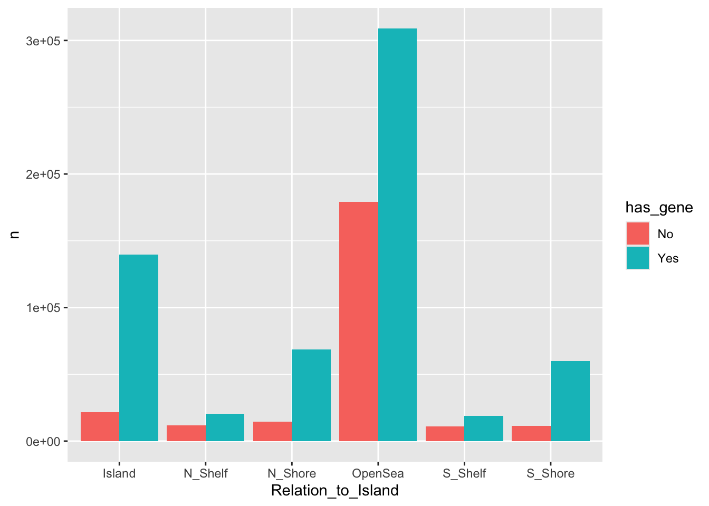
anno_array %>% filter(Name %in% overlap$Name) %>%
group_by(Relation_to_Island, has_gene) %>% summarise(n=n()) %>%
ggplot(aes(x = Relation_to_Island, y = n, fill = has_gene)) +
geom_bar(stat = "identity", position = "fill")`summarise()` has grouped output by 'Relation_to_Island'. You can override
using the `.groups` argument.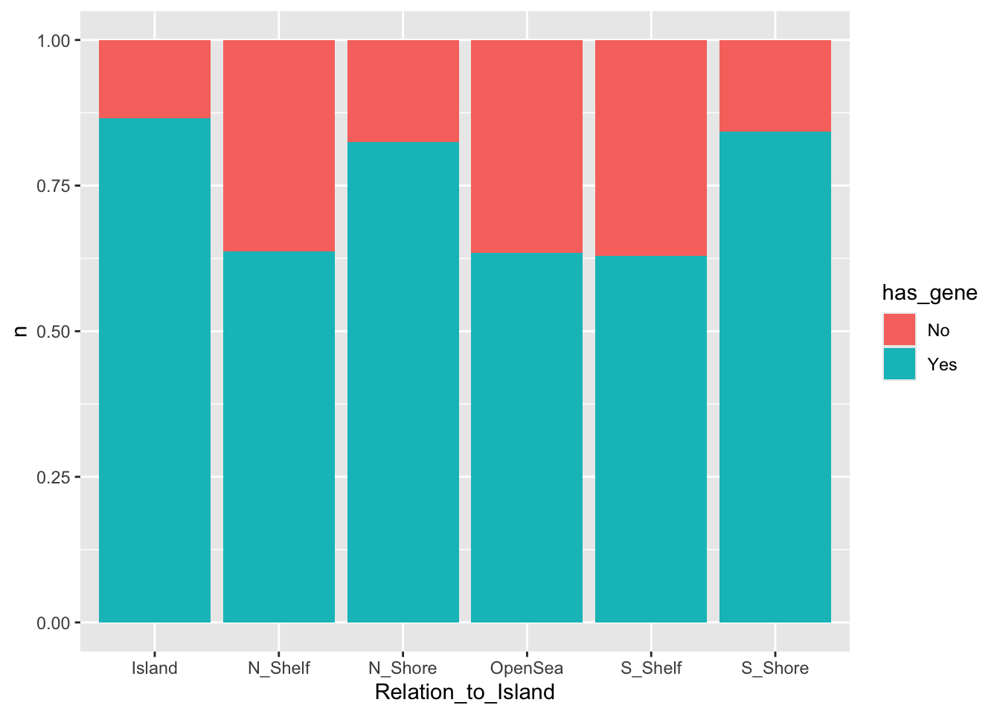
anno_array %>% filter(Name %in% overlap$Name) %>%
group_by(Relation_to_Island, has_gene) %>% summarise(n=n()) %>%
ggplot(aes(x = Relation_to_Island, y = n, fill = has_gene)) +
geom_bar(stat = "identity", position = "dodge")`summarise()` has grouped output by 'Relation_to_Island'. You can override
using the `.groups` argument.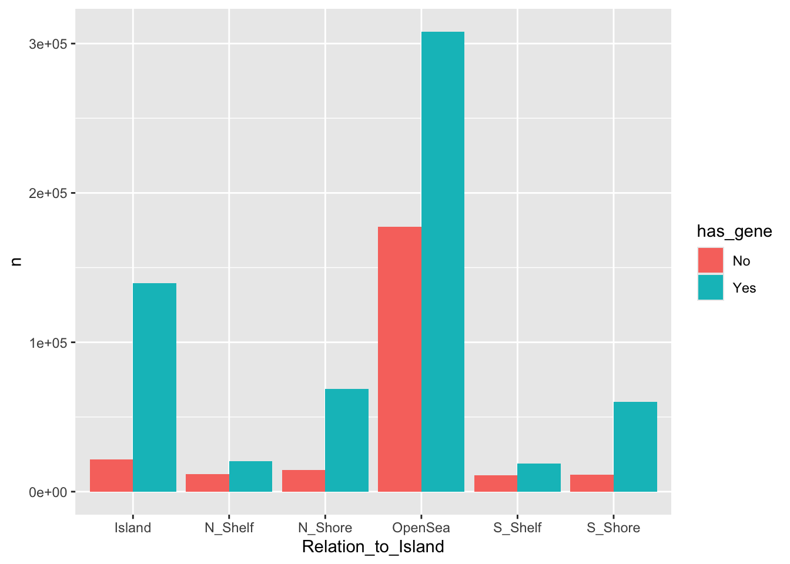
anno_array %>% filter(!Name %in% overlap$Name) %>%
group_by(Relation_to_Island, has_gene) %>% summarise(n=n()) %>%
ggplot(aes(x = Relation_to_Island, y = n, fill = has_gene)) +
geom_bar(stat = "identity", position = "fill")`summarise()` has grouped output by 'Relation_to_Island'. You can override
using the `.groups` argument.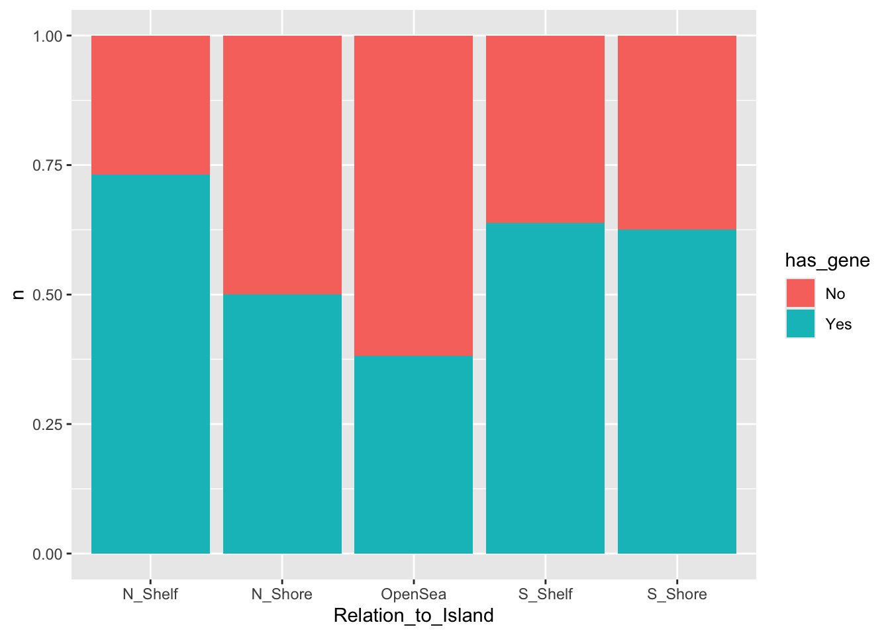
anno_array %>% filter(!Name %in% overlap$Name) %>%
group_by(Relation_to_Island, has_gene) %>% summarise(n=n()) %>%
ggplot(aes(x = Relation_to_Island, y = n, fill = has_gene)) +
geom_bar(stat = "identity", position = "dodge")`summarise()` has grouped output by 'Relation_to_Island'. You can override
using the `.groups` argument.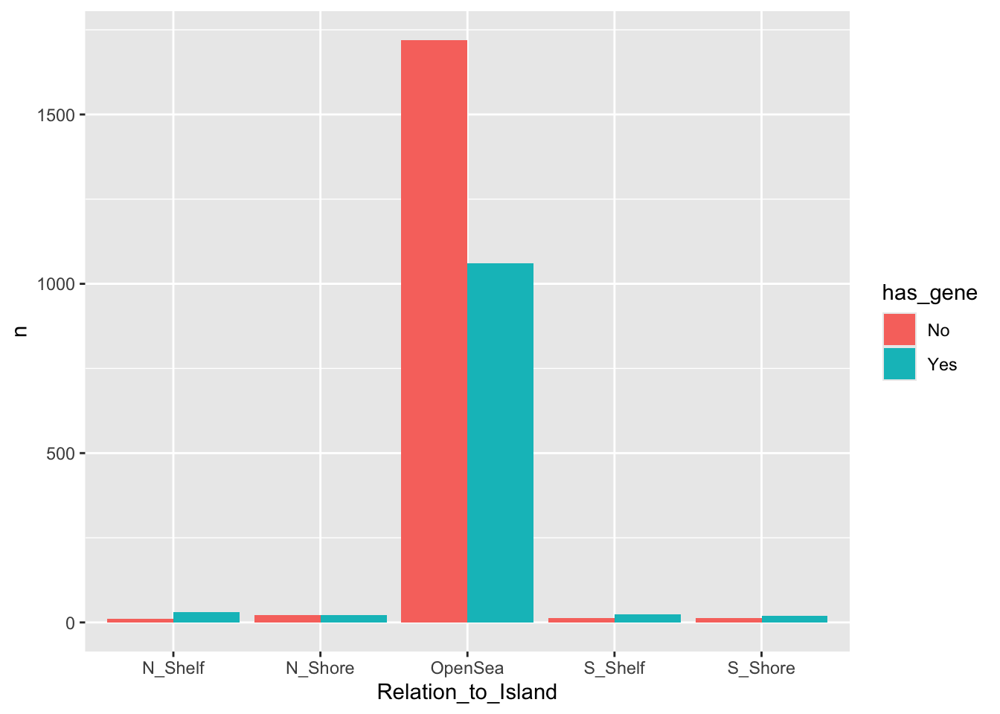
sessionInfo()R version 4.4.2 (2024-10-31)
Platform: aarch64-apple-darwin20
Running under: macOS Sequoia 15.2
Matrix products: default
BLAS: /Library/Frameworks/R.framework/Versions/4.4-arm64/Resources/lib/libRblas.0.dylib
LAPACK: /Library/Frameworks/R.framework/Versions/4.4-arm64/Resources/lib/libRlapack.dylib; LAPACK version 3.12.0
locale:
[1] en_US.UTF-8/en_US.UTF-8/en_US.UTF-8/C/en_US.UTF-8/en_US.UTF-8
time zone: Australia/Melbourne
tzcode source: internal
attached base packages:
[1] parallel stats4 stats graphics grDevices utils datasets
[8] methods base
other attached packages:
[1] annotatr_1.30.0
[2] IlluminaHumanMethylationEPICmanifest_0.3.0
[3] IlluminaHumanMethylationEPICanno.ilm10b4.hg19_0.6.0
[4] minfi_1.50.0
[5] bumphunter_1.46.0
[6] locfit_1.5-9.11
[7] iterators_1.0.14
[8] foreach_1.5.2
[9] Biostrings_2.72.1
[10] XVector_0.44.0
[11] SummarizedExperiment_1.34.0
[12] Biobase_2.64.0
[13] MatrixGenerics_1.16.0
[14] matrixStats_1.5.0
[15] ggVennDiagram_1.5.2
[16] ggplot2_3.5.1
[17] dplyr_1.1.4
[18] plyranges_1.24.0
[19] GenomicRanges_1.56.2
[20] GenomeInfoDb_1.40.1
[21] IRanges_2.38.1
[22] S4Vectors_0.42.1
[23] BiocGenerics_0.50.0
loaded via a namespace (and not attached):
[1] splines_4.4.2 later_1.4.1
[3] BiocIO_1.14.0 bitops_1.0-9
[5] filelock_1.0.3 tibble_3.2.1
[7] preprocessCore_1.66.0 XML_3.99-0.18
[9] lifecycle_1.0.4 rprojroot_2.0.4
[11] lattice_0.22-6 MASS_7.3-61
[13] base64_2.0.2 scrime_1.3.5
[15] magrittr_2.0.3 limma_3.60.6
[17] sass_0.4.9 rmarkdown_2.29
[19] jquerylib_0.1.4 yaml_2.3.10
[21] httpuv_1.6.15 doRNG_1.8.6.1
[23] askpass_1.2.1 DBI_1.2.3
[25] RColorBrewer_1.1-3 abind_1.4-8
[27] zlibbioc_1.50.0 quadprog_1.5-8
[29] purrr_1.0.4 RCurl_1.98-1.16
[31] rappdirs_0.3.3 git2r_0.35.0
[33] GenomeInfoDbData_1.2.12 genefilter_1.86.0
[35] annotate_1.82.0 DelayedMatrixStats_1.26.0
[37] codetools_0.2-20 DelayedArray_0.30.1
[39] xml2_1.3.6 tidyselect_1.2.1
[41] UCSC.utils_1.0.0 farver_2.1.2
[43] beanplot_1.3.1 BiocFileCache_2.12.0
[45] illuminaio_0.46.0 GenomicAlignments_1.40.0
[47] jsonlite_1.8.9 multtest_2.60.0
[49] survival_3.7-0 tools_4.4.2
[51] Rcpp_1.0.14 glue_1.8.0
[53] SparseArray_1.4.8 xfun_0.50
[55] HDF5Array_1.32.1 withr_3.0.2
[57] BiocManager_1.30.25 fastmap_1.2.0
[59] rhdf5filters_1.16.0 openssl_2.3.2
[61] digest_0.6.37 mime_0.12
[63] R6_2.5.1 colorspace_2.1-1
[65] RSQLite_2.3.9 utf8_1.2.4
[67] tidyr_1.3.1 generics_0.1.3
[69] data.table_1.16.4 rtracklayer_1.64.0
[71] httr_1.4.7 S4Arrays_1.4.1
[73] whisker_0.4.1 regioneR_1.36.0
[75] pkgconfig_2.0.3 gtable_0.3.6
[77] blob_1.2.4 workflowr_1.7.1
[79] siggenes_1.78.0 htmltools_0.5.8.1
[81] scales_1.3.0 png_0.1-8
[83] knitr_1.49 rstudioapi_0.17.1
[85] tzdb_0.4.0 reshape2_1.4.4
[87] rjson_0.2.23 nlme_3.1-166
[89] curl_6.2.0 cachem_1.1.0
[91] rhdf5_2.48.0 stringr_1.5.1
[93] BiocVersion_3.19.1 AnnotationDbi_1.66.0
[95] restfulr_0.0.15 GEOquery_2.72.0
[97] pillar_1.10.1 grid_4.4.2
[99] reshape_0.8.9 vctrs_0.6.5
[101] promises_1.3.2 dbplyr_2.5.0
[103] xtable_1.8-4 evaluate_1.0.3
[105] readr_2.1.5 GenomicFeatures_1.56.0
[107] cli_3.6.3 compiler_4.4.2
[109] Rsamtools_2.20.0 rlang_1.1.5
[111] crayon_1.5.3 rngtools_1.5.2
[113] labeling_0.4.3 nor1mix_1.3-3
[115] mclust_6.1.1 plyr_1.8.9
[117] fs_1.6.5 stringi_1.8.4
[119] BiocParallel_1.38.0 munsell_0.5.1
[121] Matrix_1.7-1 BSgenome_1.72.0
[123] hms_1.1.3 sparseMatrixStats_1.16.0
[125] bit64_4.6.0-1 Rhdf5lib_1.26.0
[127] KEGGREST_1.44.1 statmod_1.5.0
[129] AnnotationHub_3.12.0 memoise_2.0.1
[131] bslib_0.9.0 bit_4.5.0.1